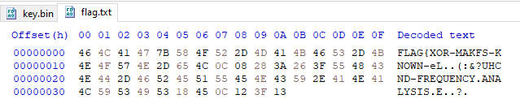

MalwareTech Windows Reversing Challenge #7 Write-Ups
[ Ransomware ]
The goal of ransomware is to encrypt files; fortunately, ransomware developers often ignore the #1 rule of crypto (never roll your own crypto). As a result, it is sometimes possible to recover encrypted files without paying the ransom. These challenges are designed to test your ability to recover ransomware encrypted data.
Ransomware1
Description:
The administrator for FlagCorp was using an outdated Windows 7 system and got infected with some ransomware. We believe this variant was most likely written by a scriptkiddie due to the fact it was so badly designed it encrypted itself. One of our malware analysts was able to recover the encryption function from memory but doesn’t know much about cryptography. Can you find a way to decrypt flag.txt?
Rules & Information:
- You are not require to run vm1.exe, this challenge is static analysis only.
- Do not use a debugger or dumper to retrieve the decrypted flag from memory, this is cheating.
- Analysis can be done using the free version of IDA Pro (you don’t need the debugger).
Hi, in this challenge there are several files given, ransomware1.exe_ and a folder named EncryptedFiles.
In the EncryptedFiles folder, there are several files encrypted by this ransomware1.exe_, and stored in 2 subfolders based on the file type, Documents and Pictures.
If we look at the file names, the files in Pictures subfolder seem to be JPG files, and a file in Documents subfolder seems to be a TXT file, this is the first important information we can get.
Next, let’s take a look into ransomware1.exe_ using detect it easy:
This ransomware1.exe_ is written using C/C++, so i’ll use Ghidra to look at its code starting from its entrypoint function.
// Ghidra decompiler result
void entry(void)
{
FUN_00401000((LPCSTR)0x0,0);
/* WARNING: Subroutine does not return */
ExitProcess(0);
}
Nothing interesting here, so let’s move into FUN_00401000:
// Ghidra decompiler result
/* WARNING: Function: _chkstk replaced with injection: alloca_probe */
void __cdecl FUN_00401000(LPCSTR param_1,int param_2)
{
BOOL BVar1;
uint local_1120;
byte local_111c [4100];
HANDLE local_118;
uint local_114;
HANDLE local_110;
char local_10c [260];
undefined4 uStack8;
uStack8 = 0x40100d;
_snprintf(local_10c,0x104,"%s_encrypted",param_1);
local_110 = CreateFileA(param_1,0x80000000,0,(LPSECURITY_ATTRIBUTES)0x0,3,0x80,(HANDLE)0x0);
local_118 = CreateFileA(local_10c,0x40000000,0,(LPSECURITY_ATTRIBUTES)0x0,2,0x80,(HANDLE)0x0);
do {
BVar1 = ReadFile(local_110,local_111c,0x1000,&local_114,(LPOVERLAPPED)0x0);
if (BVar1 != 1) break;
for (local_1120 = 0; local_1120 < local_114; local_1120 = local_1120 + 1) {
local_111c[local_1120] = local_111c[local_1120] ^ *(byte *)(param_2 + local_1120 % 0x20);
}
WriteFile(local_118,local_111c,local_114,&local_114,(LPOVERLAPPED)0x0);
} while (local_114 == 0x1000);
CloseHandle(local_110);
CloseHandle(local_118);
return;
}
Here, ransomware1.exe_ will open the target file with GENERIC_READ access and param_1 is the name of the target file, then create a new file that uses the name of the target file added with “_encrypted” string with GENERIC_WRITE access:
local_110 = CreateFileA(param_1,0x80000000,0,(LPSECURITY_ATTRIBUTES)0x0,3,0x80,(HANDLE)0x0);
local_118 = CreateFileA(local_10c,0x40000000,0,(LPSECURITY_ATTRIBUTES)0x0,2,0x80,(HANDLE)0x0);
next is read the target file with local_111c as its buffer:
BVar1 = ReadFile(local_110,local_111c,0x1000,&local_114,(LPOVERLAPPED)0x0);
and this buffer will be encrypted using XOR operation with param_2 as the encryption key:
for (local_1120 = 0; local_1120 < local_114; local_1120 = local_1120 + 1) {
local_111c[local_1120] = local_111c[local_1120] ^ *(byte *)(param_2 + local_1120 % 0x20);
}
then finally this encrypted buffer is written to a file that was created earlier as an encrypted file:
WriteFile(local_118,local_111c,local_114,&local_114,(LPOVERLAPPED)0x0);
Now let’s focus on the XOR encryption subroutine because the most important thing to be able to decrypt the encrypted files is understanding this subroutine well. Actually, this subroutine is very simple, it just XOR-ing byte per byte of target file data in the buffer with 32 bytes key.
Because this encryption uses a symmetric key and a simple XOR operation, the way to do decryption is to use the same way when doing encryption.
The problem is the key is missing, the key is stored in param_2, right?, now let’s look at when FUN_00401000 is called from entrypoint function:
FUN_00401000((LPCSTR)0x0,0);
param_1 which should hold the target filename and param_2 which should hold the encryption key both are NULL, so the encryption key doesn’t exist here, let’s start to find it!!!
There are several encrypted JPG files here, and they will be the basic clues to finding the key. A common file usually has its own file format, and usually, files of the same type have file header that are identical although not 100%. And here’s some reference about JPG file format:
- https://en.wikipedia.org/wiki/JPEG#Syntax_and_structure
- https://github.com/corkami/formats/blob/master/image/jpeg.md
Here i create a random picture using Microsoft Paint and save it as Untitled.jpg:
Now I’ll perform a bitwise XOR operation between the first 32 bytes encrypted JPG file with the first 32 bytes Untitled.jpg and save the result in key.bin. Here’s the result:
key.bin
And then i create this decrypt.py to emulate the encryption/decryption subroutine using key.bin as the key:
# decrypt.py
import sys
if len(sys.argv) != 2:
print("USAGE: decrypt.py <filename>")
sys.exit()
file1 = open("key.bin", "rb")
file2 = open(sys.argv[1], "rb")
dat1 = bytearray(file1.read())
dat2 = bytearray(file2.read())
file1.close()
file2.close()
i = 0
while i < len(dat2):
dat2[i] ^= dat1[i % 0x20]
i += 1
file3 = open(sys.argv[1].replace("_encrypted", ''), "wb")
file3.write(dat2)
file3.close()
print("done")
I decrypt flag.txt_encrypted and here’s flag.txt as the result:
python decrypt.py flag.txt_encrypted

Here some words have been properly decrypted so they can be read and the word “FLAG” following with an open bracket character at the beginning confirms that this is the FLAG.
From the source of this challenge, the FLAG has the following format:
FLAG{EXAMPLE-FLAG}
The FLAG only uses char ‘A’ - ‘Z’, ‘{’, ‘}’, and ‘-’, so except that means invalid char. Also because this encryption uses 32 bytes Symmetric-key, that means char at offset 0 and char at offset 32 will be encrypted with the same key-byte, char at offset 1 and char at offset 33 will be encrypted with the same key-byte, and so on, therefore, char at offset 0 and char at offset 32 both should be a valid char, but if not, simply it means that the key-byte used is not correct. I illustrate it like this:
Now let’s mark the invalid chars in the flag.txt:
So the key-bytes that are still not correct are in the following offsets:
- 0x0C
- 0x15
- 0x17
- 0x18
- 0x19
- 0x1A
- 0x1B
- 0x1C
Now let’s look into the JPG file format, a JPG file always ended with bytes 0xFF 0xD9 as a marker of END_OF_IMAGE, so i’ll use this to find the missing key-bytes and confirm the correctness of other key-bytes.
First, here’s the list of the last 2 bytes from all encrypted JPG files:
- Chrysanthemum.jpg_encrypted:
- 0x91, @ 0xD6B20
- 0x2E, @ 0xD6B21
- Desert.jpg_encrypted:
- 0xE4, @ 0xCE873
- 0x34, @ 0xCE874
- Hydrangeas.jpg_encrypted:
- 0x58, @ 0x91552
- 0xC2, @ 0x91553
- Jellyfish.jpg_encrypted:
- 0x12, @ 0xBD614
- 0x0C, @ 0xBD615
- Koala.jpg_encrypted:
- 0xF5, @ 0xBEA1D
- 0x99, @ 0xBEA1E
- Lighthouse.jpg_encrypted:
- 0x72, @ 0x8907A
- 0xF5, @ 0x8907B
- Penguins.jpg_encrypted:
- 0x01, @ 0xBDE69
- 0x72, @ 0xBDE6A
- Tulips.jpg_encrypted:
- 0xA4, @ 0x97956
- 0x59, @ 0x97957
Then i XOR all the last 2 bytes with 0xFF 0xD9 and MOD their offset with 0x20 to get their key-bytes offset:
- Chrysanthemum.jpg_encrypted:
- 0x6E, @ 0x0
- 0xF7, @ 0x1
- Desert.jpg_encrypted:
- 0x1B, @ 0x13
- 0xED, @ 0x14
- Hydrangeas.jpg_encrypted:
- 0xA7, @ 0x12
- 0x1B, @ 0x13
- Jellyfish.jpg_encrypted:
- 0xED, @ 0x14
- 0xD5, @ 0x15
- Koala.jpg_encrypted:
- 0x0A, @ 0x1D
- 0x40, @ 0x1E
- Lighthouse.jpg_encrypted:
- 0x8D, @ 0x1A
- 0x2C, @ 0x1B
- Penguins.jpg_encrypted:
- 0xFE, @ 0x09
- 0xAB, @ 0x0A
- Tulips.jpg_encrypted:
- 0x5B, @ 0x16
- 0x80, @ 0x17
Apply the result above to key.bin
Decrypt flag.txt_encrypted again, and here’s the result:
python decrypt.py flag.txt_encrypted
It’s getting better, huh?. But there are still some invalid chars and some chars that don’t seem right:
- @ 0x0C and 0x2C
- @ 0x18 and 0x38
- @ 0x19 and 0x39
- @ 0x1C
- @ 0x1F
So now i’ll use the other segment marker. To do that, i decrypt all encrypted JPG files using the latest key.bin, then try to find the missing segment marker, and did the same thing as the previous END_OF_IMAGE marker.
Finding the missing segment marker is quite simple. The majority of the segment marker is followed by the length of the segment itself, and with that length value, the location of the next segment’s marker can be found.
after a while of searching, i got one from decrypted Chrysanthemum.jpg_encrypted at offset 0x218.
The offset of this missing marker is in the list of key-bytes offsets i’m looking for:
- 0x218 % 0x20 = 0x18
- 0x219 % 0x20 = 0x19
The missing segment marker is located after SOF0 start of frame (baseline jpeg) which is marked with 0xFF 0xC0, so most likely this missing segment is DEFINE_HUFFMAN_TABLE(DHT) with 0xFF 0xC4 as the segment marker.
To get the correct key-bytes at offset 0x18 and 0x19, XOR the encrypted bytes of Chrysanthemum.jpg_encrypted at offset 0x218 and 0x219 with 0xFF 0xC4:
- 0x56 ^ 0xFF = 0xA9
- 0x17 ^ 0xC4 = 0xD3
Put the result above into key.bin:
And then decrypt flag.txt_encrypted again. Here’s the result:
It’s almost perfect, right?. And now there are 4 char left(3 key-bytes):
- @ 0x0C and 0x2C
- @ 0x1C
- @ 0x1F
Let’s just guess it!
- Char at 0x0C and 0x2C, both are encrypted using same key-byte, so just focus on one of them. Here, char at 0x0C is ‘F’ in word “MAKFS”, and i guessed that the correct word is “MAKES”, so char at offset 0x0C should be ‘E’(0x45).
- Char at 0x1C. This char is in word “PLAINTE?T”, and i guessed that the correct word is “PLAINTEXT”, so char at 0x1C should be ‘X’(0x58) instead of ‘?’.
- Char at 0x1F. This char is in word “CND”, and i guessed that the correct word is “AND”, so char at 0x1F should be ‘A’(0x41).
XOR all original encrypted bytes in flag.txt_encrypted with its guessed char:
- (@ 0x0C) 0xC5 ^ 0x45 = 0x80
- (@ 0x1C) 0xE0 ^ 0x58 = 0xB8
- (@ 0x1F) 0x4E ^ 0x41 = 0x0F
Put the result above into key.bin:
Then decrypt flag.txt_encrypted once again, and here’s the decrypted flag.txt:
It seems complete now, FLAG{XOR-MAKES-KNOWN-PLAINTEXT-AND-FREQUENCY-ANALYSIS-EASY}. Let’s check it out:
Yeah, we’ve got the FLAG!.
And as a bonus, here’s all decrypted JPG image:
Chrysanthemum-min.jpg
Desert-min.jpg

Hydrangeas-min.jpg
Jellyfish-min.jpg
Koala-min.jpg
Lighthouse-min.jpg
Penguins-min.jpg

Tulips-min.jpg
Challenge source: https://www.malwaretech.com/challenges/windows-reversing/ransomware1